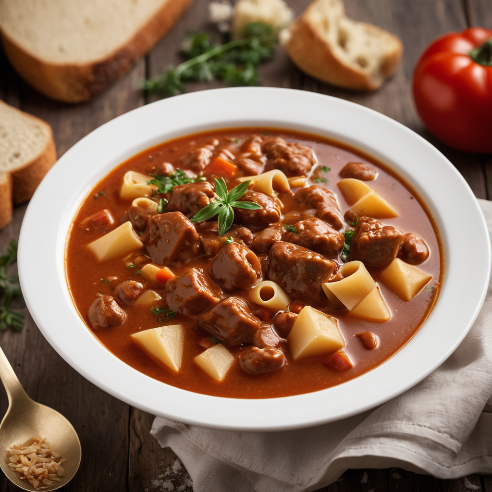

Hozzávalók:
- 500 g marhalábszár (vagy más darabos marhahús, például lapocka vagy tarja), kockákra vágva
- 2 ek sertészsír vagy olaj
- 2 vöröshagyma, apróra vágva
- 2 fokhagyma, apróra vágva vagy zúzva
- 2-3burgonya, kockákra vágva
- 2sárgarépa, karikákra vágva
- 1 zöld paprika, kockázva
- 2 paradicsom, kockázva (vagy 1 konzerv paradicsom)
- 1 ek őrölt pirospaprika
- 1 tk őrölt kömény
- 1 babérlevél
- 6-8 csésze marhahús alaplé vagy víz
- Friss petrezselyem vagy snidling apróra vágva a tálaláshoz
- só
- bors
Elkészítés:
- Egy nagy lábasban hevítsük fel a sertészsírt vagy olajat közepes lángon.
- Adjuk hozzá a felkockázott marhahúst, és pirítsuk meg mindkét oldalát, amíg szép barna színt kap.
- Adjuk hozzá az apróra vágott vöröshagymát és fokhagymát, majd pároljuk őket néhány percig, amíg az hagyma üveges lesz.
- Keverjük hozzá a pirospaprikát és a köményt, majd főzzük még 1-2 percig, hogy az ízek kibontakozzanak.
- Adjuk hozzá a burgonyát, sárgarépát, zöld paprikát, paradicsomot és babérlevelet. Keverjük össze, majd főzzük őket még néhány percig.
- Öntsük fel az alaplevet vagy vizet, majd forraljuk fel.
- Csökkentsük a hőt, és főzzük a levest lassú tűzön kb. 1-1,5 órán át, amíg a hús és a zöldségek teljesen megpuhulnak.
- Ízesítsük sóval és frissen őrölt fekete borssal ízlés szerint.
- Tálaláskor szórjuk meg friss petrezselyemmel vagy korianderrel, ha szeretnénk.